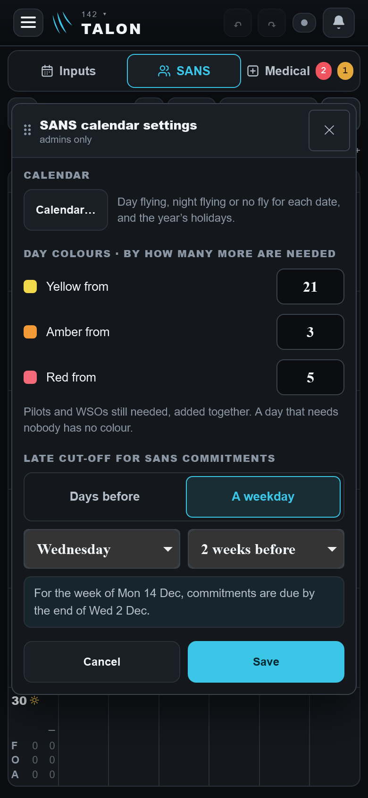
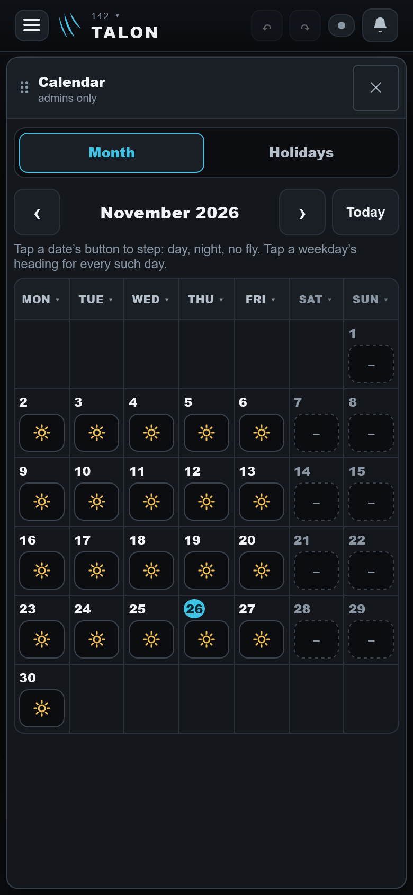
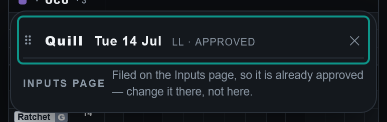
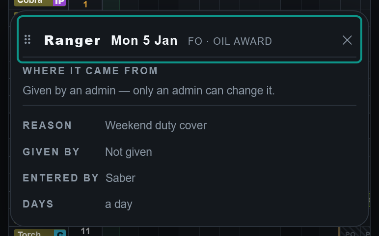
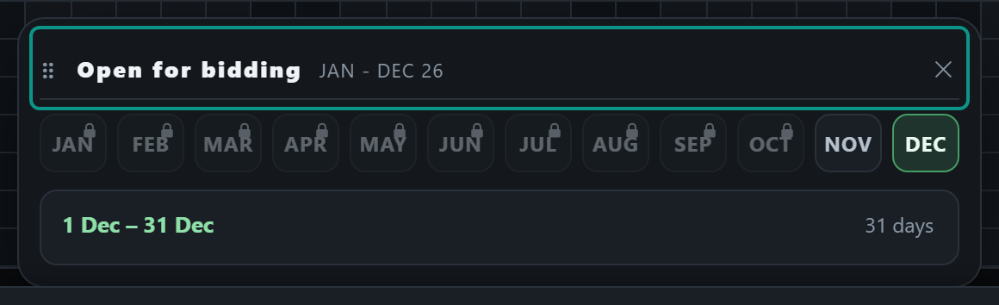
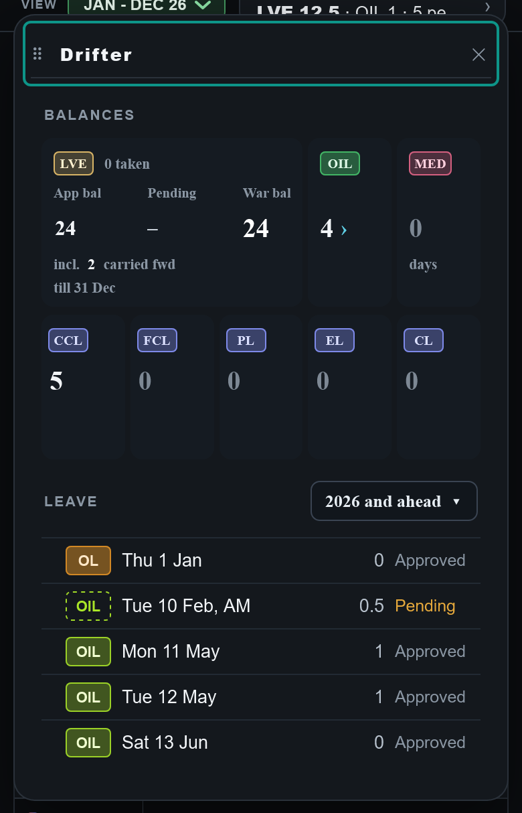
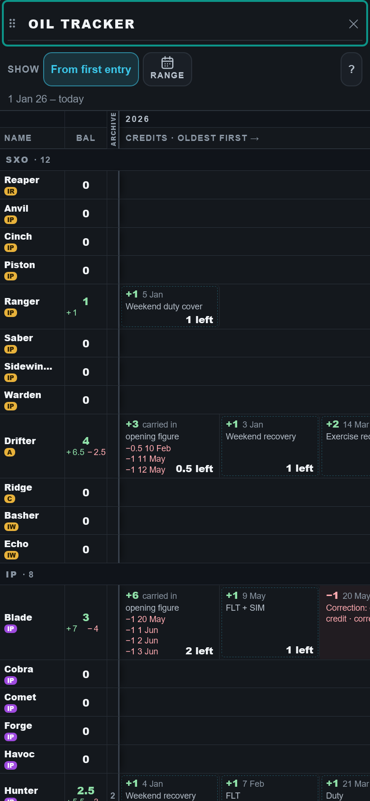
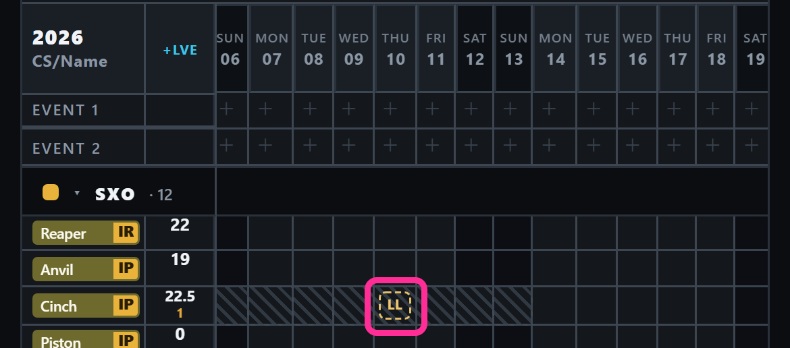
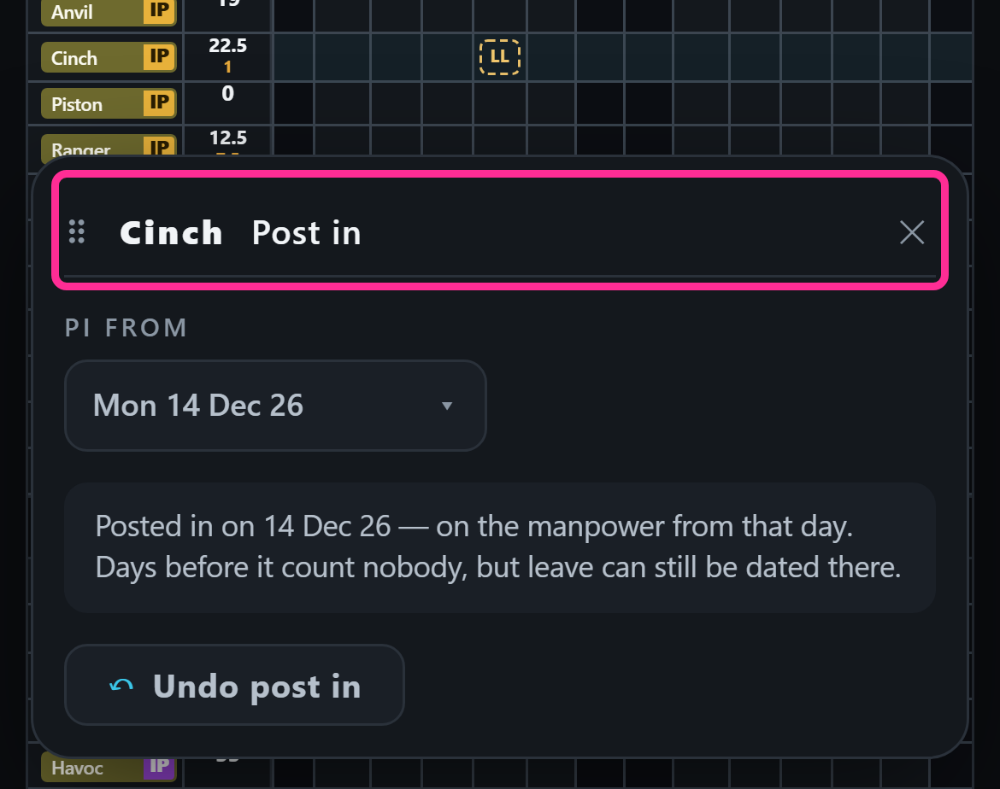
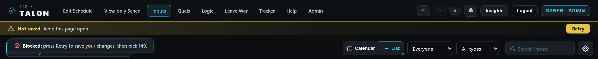

Questions waiting on you
Tap a question to jump to it. Pick an answer under each one; the line at the foot builds your reply. Copy it and paste it into the coordinator chat.
- 7On a phone, the Calendar over SANS calendar settings: which note? newRecommended: name the Calendar first, as for Inputs
- 6Which Leave War windows close by themselves when you pick another squadron? newRecommended: two close, three refuse for everyone
- 2Start the Admin → Users chat?Recommended: go
- 3A leave bid before a man's post-in date: what does a tap on that day open?Recommended: the bid
- 4A save that never answers: build the give-up now or with the database?Recommended: with the database
- 5"Delete Cinch now?" card: the dashed grey Delete too?Recommended: yes
7. On a phone, the Calendar over SANS calendar settings: which note?
When it happens: a few times a month, on a phone. Saber changes the late cut-off in SANS calendar settings, opens the Calendar from there without saving, then picks 149.
What you chose already: for Inputs calendar settings on a phone, where the Calendar fills the screen and hides the settings, the note reads "Blocked: close the Calendar, save or cancel Inputs calendar settings, then pick 149."
What we found: SANS calendar settings hides under the Calendar in exactly the same way, with its change not saved, still underneath.


Recommended: the same note with that window's name: "Blocked: close the Calendar, save or cancel SANS calendar settings, then pick 149." On a desktop, where the two stand side by side, the plain "Blocked: save or cancel SANS calendar settings, then pick 149."
The other choice: the desktop's words on a phone too.
6. Which Leave War windows close by themselves when you pick another squadron?
When it happens: now and then. Hunter is on 142's Leave War with one of these windows open and picks 149. Or he presses his name badge for the member view, or a bell line of another squadron.
What you ruled already: a window that only shows things closes by itself at a pick. A window where something can be typed, ticked or left half done refuses the pick with the grey "Blocked:" note. These five were never shown to you one by one. Today each stays open over the other squadron's Leave War.





Recommended: 1 and 2 close by themselves at a pick. 3, 4 and 5 refuse for everyone: "Blocked: close the open window, then pick 149." Each window then behaves the same whoever is looking, and nothing an admin typed can be lost to a rule that depends on who he is. Cost: a member with one of the three open must close it before picking.
The other choice: 3, 4 and 5 close by themselves for a member and refuse for an admin.
2. Start the Admin → Users chat?
What it builds: Admin → Users across squadrons, as you approved on its page. Another squadron's people shown in a short row. Plan given only by a squadron's own admins. The Outgoing and Incoming groups. The jump buttons on a phone. One search over every group.
Why now: it was waiting for "+ Add a person" to move to the top row of Admin → Users. That is now built and on the build branch.
Recommended: go. Fable runs it, Opus helpers build, and a security reader reads it because it changes who may give a right.
The weekly allowance was at 99% when last read. You said you'd reset it at 100%.
3. A leave bid before a man's post-in date: what does a tap on that day open?
When it happens: an admin tidies the Leave War for a man joining the squadron. Cinch is posted in from Mon 14 Dec. A leave bid sits on Thu 10 Dec, before he arrives, placed before his post-in was set or by Cinch himself. Rare, but it happens to every incoming man who bids early.
What happens now: the admin's tap on 10 Dec opens only "Cinch Post in". Nothing on it reaches the bid's Approve, Refuse, Move or Delete. The way through used to be "Place leave or OIL here instead…", which you ruled away. Approvals, a drag across the day, or Cinch's own tap still reach the bid.


The other end already works: a day after a man's post-out date that has something on it opens that thing's own window.
Recommended: the same before a post-in. A day before his post-in that holds a bid or an input opens it. An empty day still opens "Cinch Post in". Nothing new to draw.
The other choice: leave it as built. The bid is reached only from approvals, a drag, or Cinch himself.
4. A save that never answers: build the give-up now, or with the database?
What you approved: if a save gets no answer, the app stops waiting and shows "Not saved" with Retry. A squadron pick is then refused until you press Retry.

What we found: today a save can't hang. The app saves inside your browser, and each save finishes the instant it's made. A save can only hang once the shared database comes in, at the end of the project. The page's "as when the connection drops mid-save" was wrong for today's app.
Recommended: build now what you'll use: a squadron pick, the member-view switch and a bell line wait for a save, then go ahead, or are refused with the Retry note. Today that wait ends at once. The "give up after 20 seconds" part is filed with the database step, with its tests written down. That's where the real store decides how a late answer is treated.
The other choice: build the 20-second give-up now. Only tests could prove it, you couldn't see it before the database step, and it changes the saving code for no effect today.
5. "Delete Cinch now?" card: the dashed grey Delete too?
When it happens: an admin has set Cinch to be deleted on a date, then moves that date to today or earlier. The app asks "Delete Cinch now?" on a card just like the "Delete Cinch?" card below.

Recommended: yes, the same dashed grey. Every Delete on the Leave War's cards would then look the same.
The other choice: keep today's reddish Delete on that one card.